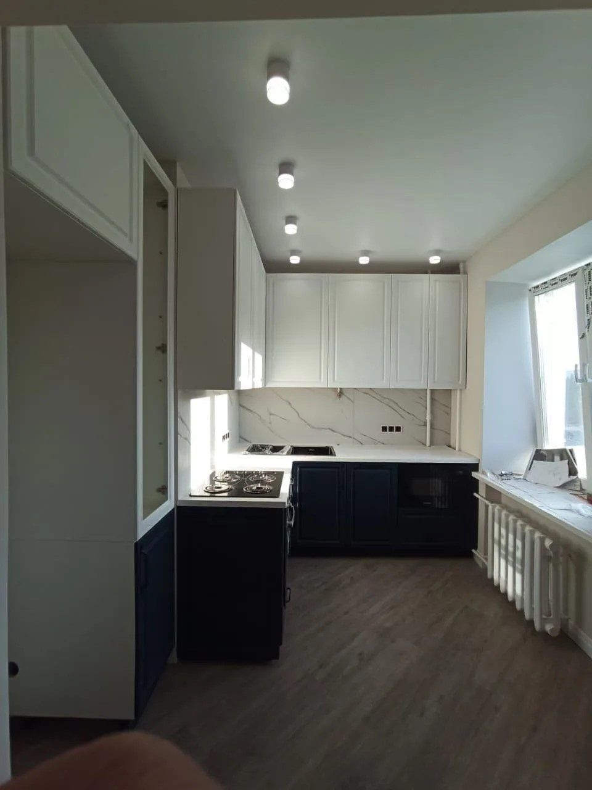

Кухни на заказ по вашим размерам
Готовых кухонь у нас нет — каждая делается по фактическим размерам вашего помещения. Современные и классические, прямые и угловые, для просторных кухонь и для хрущёвок. Замер и дизайн-проект бесплатные.
- Рассрочка 8 месяцев без банка
- Замер и проект бесплатно
- Гарантия 18 месяцев
- Срок до 45 рабочих дней

Фасады
Из чего делаем фасады
Шесть материалов — от самого доступного до массива дерева. На каждой карточке коротко, полный разбор — на отдельной странице.
Полимерная плёнка на основу. Любой цвет, имитация дерева, мрамора, гранита и плитки. Самый доступный вариант.
Подробнее →Толщина 0,6–1,8 мм на МДФ. Не царапается и не боится влаги. Arpa, Lemark, Melaton, Abet — несколько сотен цветов.
Подробнее →Пластиковый фасад в окантовке алюминиевым профилем. Хай-тек и защита торцов от влаги и сколов.
Подробнее →Красят в несколько слоёв, шлифуют, лакируют. Матовая, глянец, перламутр, металлик. Каталог RAL Classic — 216 оттенков.
Смотреть палитру →Самый дорогой фасад. Ясень и бук, классика и модерн. Италия и Россия, 11 чистых цветов, декор оксидной плёнкой.
Подробнее →В рамку из МДФ вставляется пластик, стекло или ротанг. Выразительный фасад, не похожий на типовую кухню.
Подробнее →Отдельно, без своей страницы: фасады со стеклом — матовое, тонированное или зеркало, с фацетом или пескоструйным рисунком.
Эмаль
Фасады в цвете по каталогу RAL
Эмалевые фасады красим по палитре RAL Classic — 216 стандартных оттенков. Это международная система кодов: называете код — красим ровно в этот цвет, от чисто-белого до глубокого бордо. Матовая, глянец, перламутр, металлик.
Оттенок на экране передаётся приблизительно и отличается от эмали — окончательный цвет выбирайте по вееру-образцу в салоне на Грибоедова.
Ходовые цвета для кухонь
Вся палитра RAL Classic — 216 цветов
Кухни, которые мы сделали
Всё сделано на нашем производстве и стоит в квартирах Дзержинска и области.




Из чего состоит кухня
Корпус
Основа кухни, скрытая за фасадами: навесные и напольные шкафы, ящики. Самый экономичный вариант — ламинированная древесная плита (ЛДСП). Мы используем ЛДСП австрийского и российского производства, класс экологичности E1. Корпус можно сделать из МДФ или массива — это экологичнее, но дороже в два-три раза.
Столешница
Пластик
Основа из древесно-стружечной плиты, покрытая слоистым пластиком высокого давления. Практичный и недорогой вариант.
Жидкий камень
На основу напыляется смесь полимерной смолы, минерального наполнителя и пигментов. Долговечнее пластика, спокойно переносит удары и горячее, и главное — на поверхности нет швов. Оттенок и текстура выбираются по каталогу.
Стеновая панель
Фартук оформляем панелями из МДФ или стекла. Любой цвет или рисунок, можно напечатать изображение из нашего каталога или из фотобанка.
Фурнитура
- Ручки — под бронзу, золото, серебро, хром, медь, латунь или никель.
- Выдвижные системы — корзины и ящики, волшебные уголки, бутылочницы.
- Механизмы — подъёмные, петли с доводчиком, поворотные, направляющие.
- Сушилки — для верхних, нижних и угловых шкафов.
- Рейлинг — перекладина на фартук, опоры для барной стойки.
- Подсветка — споты и светодиодные ленты.
Процесс
Как мы работаем
- Заявка
- Бесплатный замер
- Дизайн-проект
- Изготовление
- Доставка и сборка
Частые вопросы
У меня нестандартный размер кухни после ремонта — сделаете по моим размерам?
Все кухни изготавливаются по фактическим размерам помещения. Готовой мебели у нас нет в принципе, так что кухня подойдёт по размеру гарантированно.
Сколько времени займёт сборка дома?
Обычно один день. Модули собираем на производстве и привозим кухню частично собранной — у вас на месте остаётся закрепить модули и подогнать по факту.
Сколько стоит замер?
Замер, подбор вариантов дизайна и расчёт кухни бесплатны.
Что если что-то сломается после гарантии?
Новую деталь можно заказать у нас на производстве — мы делаем мебель сами и не зависим от поставок готовых модулей.